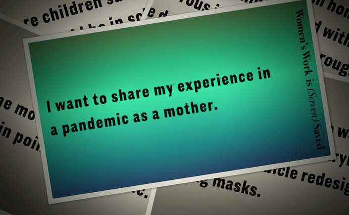
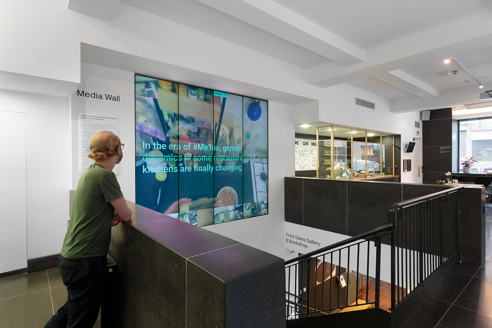
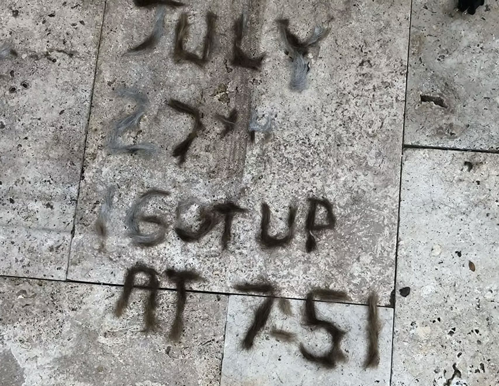
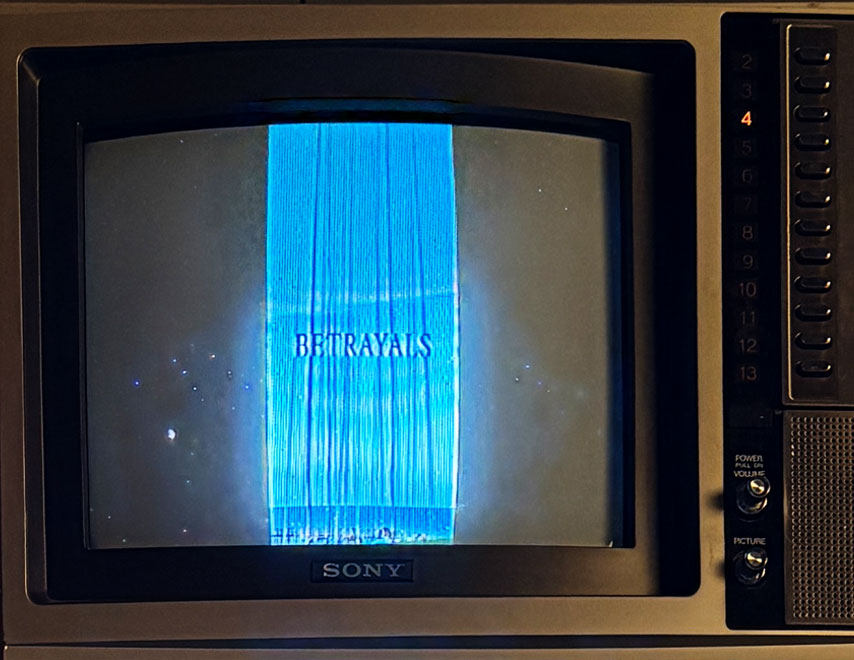
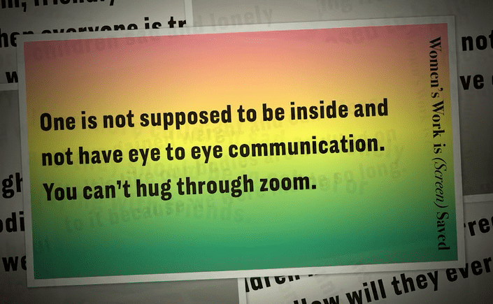

A Kitchen of Own's One
The Photographers‘ Gallery, London
2020,
with Sabrina Starnaman and Dale MacDonald
A Kitchen of One‘s Own was commissioned for Data / Set / Match,
a programme that seeks new ways to
present, visualise and interrogate contemporary image datasets. Alongside the Media Wall, all parts
of the work including its bibliography (The Kitchen Bib), complete video set, and
code (.sh, .js, .html, .css, .py) has been published with a Creative Commons (cc-by-nc)
license on Github. The dataset of videos are based on the training from Epic Kitchens intelligence,
transformed in size and duration, and re-exported. Due to the timing of this work,
Epic Hand Washing in the Time of Lost Narratives is an additional commission that restaged the project for online viewers.

I Got Up 2020, Pandemic Edition
Archived in the Electronic Literature Knowledge Base
I Got Up 2020, Pandemic Edition started as an Instagram series inspired by On Kawara’s 1968-79 daily
postcard ritual. This series of digital posts is a visible record of getting up while confined
to the house and simultaneously enacting the roles of mother, artist, housekeeper, and teacher.
These daily vignettes interpret “getting up” as unusually labor
intensive—creative on the best days and merely possible on the worst. As a result of the quarantine, and the
collapse of professional and domestic spaces, this series of getting up was a creative family adventure.

One Word Poems
Middle School Edition, 2022, Galveston Beach, Self-imposed Mother’s Artist Residency
Inspired by the Artist/Mother Podcast’s call to continue forms of creative practice during the daily activities of parenting, I transformed the month of June into a “Mother’s Artist Residency.” Most of this took place on the beach in Galveston, Texas. During the long drive south my twin boys and I talked about the social dimensions of fourth grade, and the likely dramas of middle school. We listened to a This American Life episode about Middle School that had us laughing together and spurred our conversation. This collection of one word poems is inspired by the lexicon of their world and by close proximity, mine, too. Each One Word Poem follows a strict set of self-imposed rules: I only used my iPhone (v. 13) and the free version of Vixer. The videos are ten-seconds with one word overlayed, set in 24 point Amir (one of two free typefaces in the app) with variable tracking. The word-image relationships are poetic. Sometimes the images are conduits for a feeling I associate with the word (like, rituals). Sometimes they’re in opposition (rules, expectations). Sometimes they are literal (forgiveness, routines). Sometimes a quality of the word resonates with the way the word interacts with the slightly moving image (promises, betrayals).
This work was exhibited on Vintage SONY Trinitron Televisions (10 second digital videos) during my solo exhibition at 7 MOONS MEDIA STUDIOS in Richardson, Texas, March - August, 2026.
Women's Work is Screen Saved
2022,Screensaver made with sentiments shared by female-identifying caretakers on Mechanical Turk
Inspired by the Artist/Mother Podcast’s call to continue forms of creative practice during the daily activities of parenting, I transformed the month of June into a “Mother’s Artist Residency.” Most of this took place on the beach in Galveston, Texas. During the long drive south my twin boys and I talked about the social dimensions of fourth grade, and the likely dramas of middle school. We listened to a This American Life episode about Middle School that had us laughing together and spurred our conversation. This collection of one word poems is inspired by the lexicon of their world and by close proximity, mine, too. Each One Word Poem follows a strict set of self-imposed rules: I only used my iPhone (v. 13) and the free version of Vixer. The videos are ten-seconds with one word overlayed, set in 24 point Amir (one of two free typefaces in the app) with variable tracking. The word-image relationships are poetic. Sometimes the images are conduits for a feeling I associate with the word (like, rituals). Sometimes they’re in opposition (rules, expectations). Sometimes they are literal (forgiveness, routines). Sometimes a quality of the word resonates with the way the word interacts with the slightly moving image (promises, betrayals).
This work was exhibited on Vintage SONY Trinitron Televisions (10 second digital videos) during my solo exhibition at 7 MOONS MEDIA STUDIOS in Richardson, Texas, March - August, 2026.